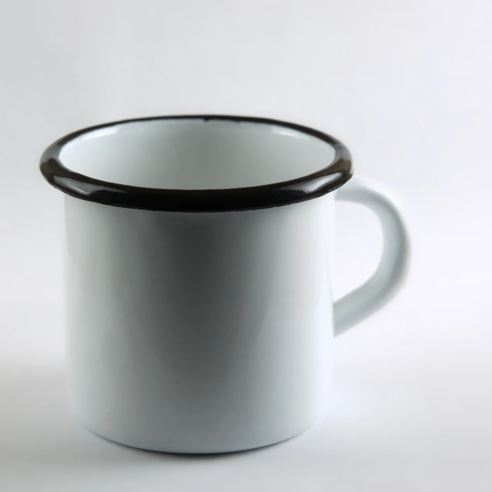
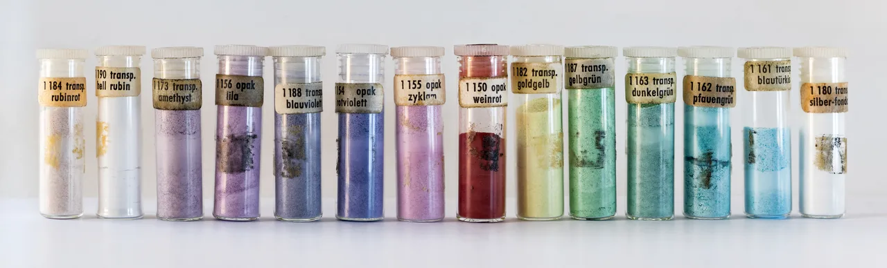

En los fogones campesinos y en las fondas de mercado de toda América Latina, el pocillo y el plato de peltre esmaltado han sobrevivido a todas las modas del menaje moderno. Una indagación sobre el acero vitrificado, las cicatrices de esmalte y la entrañable resistencia cotidiana de la cocina popular.
Si hubiera que elegir un solo objeto capaz de condensar la memoria sensorial de la cocina popular en América Latina —un artefacto que haya cruzado todas las fronteras geográficas, desde los valles de Oaxaca hasta las estancias del Chaco y desde las veredas cafeteras de Colombia hasta las caletas pesqueras de Valparaíso—, tendríamos que señalar sin dudarlo un pocillo de peltre. Pintado casi siempre de un azul cobalto profundo, de un blanco lechoso orlado por una línea negra en el reborde o de un verde esmeralda moteado de pequeñas motas blancas, ese pocillo descansa sobre el fogón de leña como un monumento humilde a la persistencia cotidiana. En él se ha servido el café colado en talega, el mate caliente con poleo, la sopa de frijol o el chocolate espeso con canela que despertó a tres generaciones de trabajadores.

Llamamos peltre en nuestro continente a lo que en rigor técnico es chapa de acero dulce recubierta por una capa vitrificada de esmalte cerámico cocido al fuego. La confusión lingüística tiene su origen en la época colonial, cuando el peltre genuino —una aleación pesada y opaca de estaño, cobre y plomo— era el metal utilizado en las mesas señoriales de los hacendados. Pero a finales del siglo diecinueve y principios del veinte, cuando la revolución industrial alemana e inglesa perfeccionó la tecnología del acero esmaltado, el pueblo adoptó el nombre noble para designar a esta nueva vajilla barata, ligera e indestructible que las fábricas comenzaron a volcar masivamente sobre los mercados latinoamericanos.
La proeza material del acero esmaltado radica en la unión íntima de dos sustancias que parecen enemigas por naturaleza: el metal y el vidrio. El metal aporta la flexibilidad estructural, la resistencia mecánica al impacto y la capacidad de conducir el calor rápidamente desde el fuego hasta el líquido; el esmalte vítreo, fundido en hornos industriales a más de ochocientos cincuenta grados centígrados, proporciona una superficie completamente lisa, impermeable y químicamente inerte, que no absorbe olores, no altera el sabor de los alimentos y resiste la corrosión de los ácidos de la fruta y del vinagre.
Pero la verdadera gloria del peltre, aquello que lo convierte en un objeto entrañable y profundamente humano, no es su perfección de fábrica, sino su manera aristocrática de envejecer. Una taza de porcelana fina inglesa o un plato de vidrio prensado moderno son artefactos cobardes: basta un leve descuido al fregarlos, un tropiezo contra el borde del fregadero o una caída desde la mesa para que se pulvericen en mil astillas irremediables, obligando a sus dueños a barrer los pedazos y tirarlos a la basura con rencor.
El peltre, en cambio, jamás se rompe. Cuando un plato hondo o una cafetera de peltre caen desde lo alto de la repisa y se estrellan contra el piso de ladrillo o de tierra pisada, no se produce el chasquido trágico de la rotura cristalina, sino un estruendo metálico, seco y sonoro, que hace temblar las paredes pero deja la pieza intacta. Lo único que ocurre es que en el punto exacto donde el metal absorbió la violencia del golpe, la lámina vítrea exterior salta en una pequeña escama, dejando al descubierto una mancha oscura de acero desnudo.

A esa mancha la llamamos en nuestras tierras un desconchón. Lejos de afear el objeto o invalidarlo para el servicio, el desconchón es la cicatriz honrosa que testimonia que el pocillo ha participado de la vida de la casa. Un pocillo de peltre con tres o cuatro desconchones negros en la base y en el asa no es una pieza defectuosa: es un veterano de guerra que ha sobrevivido a las mudanzas apresuradas, a los juegos bruscos de los niños pequeños, a los aguaceros imprevistos en el patio y a los madrugones de invierno. Cada golpe tiene una fecha y un recuerdo asociado en la memoria oral de la familia.
Durante las décadas del desarrollismo de los años sesenta y setenta, las clases medias urbanas, deslumbradas por la modernidad higiénica de los plásticos de polietileno y las melaminas de colores chillones, miraron al peltre con desdén avergonzado. Se consideraba un utensilio de gente pobre, una vajilla rústica propia de peones de campo y choferes de camión que debía ser desterrada de los hogares ilustrados. Pero ocurrió con los plásticos lo que ocurre con todo lo que nace de la frivolidad del petróleo: al cabo de pocos meses se rayaban, perdían el brillo, se deformaban con el calor del fuego y acumulaban una grasa amarillenta e insalubre que ningún detergente alcanzaba a limpiar.
El viejo peltre, mientras tanto, continuó esperando pacientemente en los mercados de abasto y en los pueblos de provincia. Hoy, cuando el mundo entero empieza a ahogarse en la marea tóxica de los envases desechables y busca con desesperación alternativas que no destruyan el ecosistema, descubrimos que la vieja vajilla de nuestras abuelas era la solución más ecológica y duradera que jamás hayamos tenido entre las manos. Un pocillo de peltre no se tira: se hereda. Y en ese metal que resiste el fuego directo del fogón y conserva las marcas de sus caídas late una lección filosófica que convendría no olvidar: que la verdadera dignidad de las cosas humanas no radica en fingir que nunca hemos sido golpeados, sino en seguir sirviendo el café caliente a pesar de todas las cicatrices.
Fuentes.
- Baudrillard, Jean (1968). El sistema de los objetos: Funcionalidad, desgaste y afecto en el mundo cotidiano. Siglo XXI.
- Roche, Daniel (1997). Historia de las cosas banales: El nacimiento del consumo en las sociedades populares. Crítica.
- Martín-Barbero, Jesús (1987). De los medios a las mediaciones: Comunicación, cultura y hegemonía popular. Gustavo Gili.
Investigación sobre cultura material y tecnologías domésticas en la vida cotidiana latinoamericana.
Fuentes consultadas el 19.11.2026. Análisis e interpretación: RUMMOR. Edición privada para revisión.